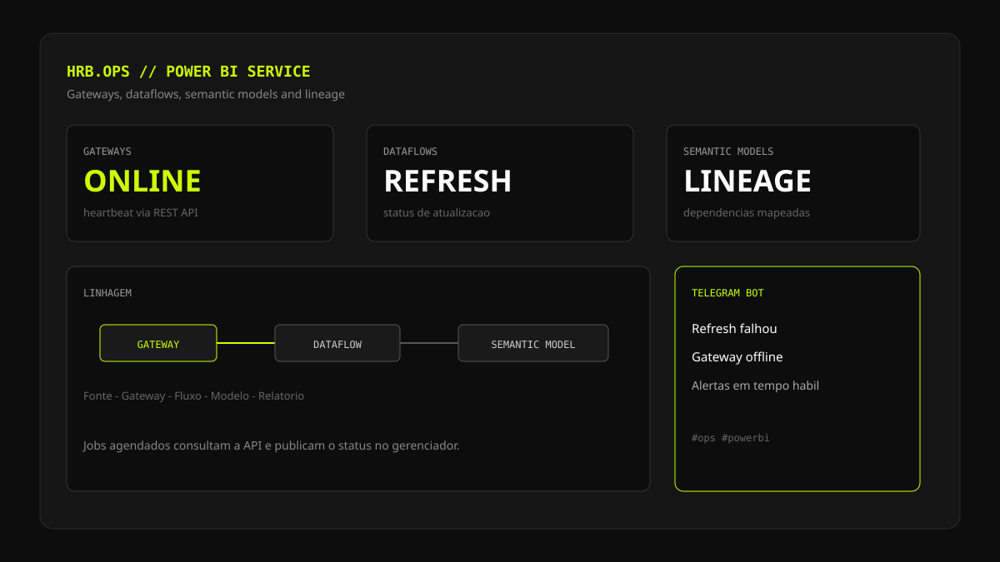

Alertas BI — Observabilidade no Power BI Service
Problema
Falhas de refresh, gateways offline e quebras de linhagem só apareciam quando o relatório já estava errado. O ambiente precisava de saúde operacional visível, não só de dashboards de negócio.
Abordagem
Jobs agendados consultam a Power BI REST API para status de gateways, dataflows e semantic models, incluindo linhagem entre ativos, e publicam o resultado no gerenciador interno da empresa.
Resposta
Quando um refresh falha ou um gateway sai do ar, um bot no Telegram dispara o alerta com contexto suficiente para agir antes do impacto chegar ao usuário final.
Da API ao alerta
O Power BI Service expõe o estado da plataforma — mas esse estado só vira operação quando é coletado com cadência, interpretado e entregue no canal certo. O Alertas BI trata o workspace como um sistema a ser observado.
As chamadas autenticadas cobrem gateways (online/offline), dataflows e modelos semânticos (ciclo de atualização) e lineage (de quem depende o quê). Os dados são persistidos em um schema SQL dedicado, com tabelas modeladas para alimentar o gerenciador interno; o Telegram fecha o loop de incidente.
O desenho prioriza observabilidade: menos surpresa no refresh da manhã, mais rastreio quando um dataset sobe e o relatório filho quebra.
Stack técnica
